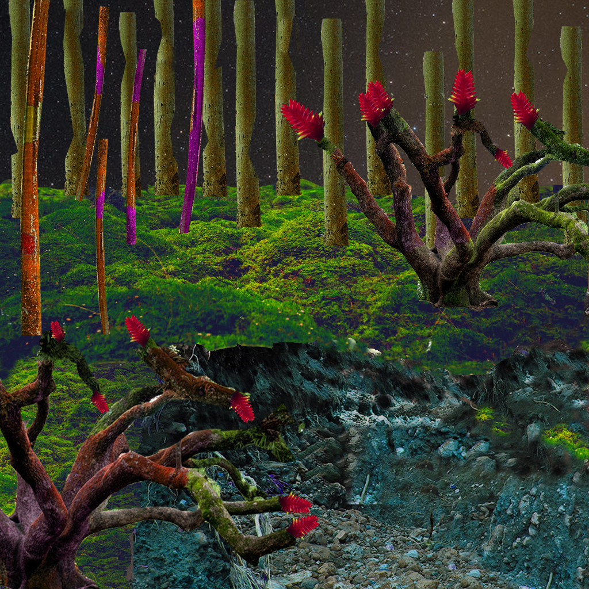

For this project, I wanted to make a Wakanda inspired stop motion graphic about Slyth’s ancestors. I used audacity to cut up the audio, this was the hardest part as the audio was tedious. I tried to make myself sound old through the way I was speaking as it was meant to be Slyth’s grandmother who was the storyteller. Next, I molded my scenes using playdoh and went to work. I tried to use a shirt as a green screen for the background but, it ended up looking weird so, I simply left the background green. After I did this, I used premiere to cut them together. It wasn’t a hard process as the audio was only 30 seconds but, it was tedious. The first prototype of Slyth’s grandmother was hard to compose as I had a lot of trial and error with the shape. I remembered you telling me to make it more round and it definitely worked. Slyth’s nation looked more like Oompa Loompa’s than snakes but I think I got the point across.
Bousquet,Neena,MMP100,9/14/2020  LongitudeLatitude,snake,8/12/2009.